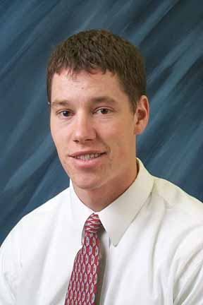

Social Vice President
ASRC

Social Vice President |
ASRC |
|
|
|
|
 |
Social Vice PresidentRussell Page Sandy, UT Communications / Digital Media pag99004@byui.edu
|
Hello, and welcome to dance central. The social board works to provide a marvelous amount of dances for the you, the Associated Students of Ricks College. Often times we walk into a ballroom filled with decorations that create a memorable atmosphere and we never realize how they got there. The dances are planned, decorated, and carried out by people like you who want to remember their college social experience just like anybody.
I was born in Utah and grew up in Sandy with great friends and great family. I am the second child of six and probably gave my parents enough stress to take six years from their lives. I like camping, hiking, the outdoors, riding horses, playing the guitar and reading. One of my favorite books is "Don't sweat the small stuff" I served a mission to the great state of Texas. The Texas Houston East Mission, and was able to go and visit over the summer. I have two of the cute nieces and can't wait for more.
I am planning on going to BYU after Ricks and hope to graduate with a degree in Public Relations. I love working with kids and hope to have a bunch of my own. Someday I would like to work for the Church's Public Affairs department.
|
|
| Dances | Get Involved | Questions/Comments | |